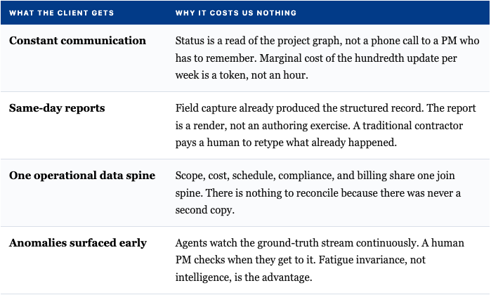

ESSAY · AUGUST 2026 · BENJAMIN YI
You Cannot Hire Your Way Out of a Systems Problem
Our industry’s problems, and what RestoreFast is doing differently to solve them.
Ask a $50M contractor how they grew, and you will get a hiring story. Two more PMs, a super for the second region, a controller, an estimator, a safety coordinator, a regional VP once the PMs stopped reporting cleanly.
Ask what those people actually do, and the honest answer is that the project lives in their heads. Scope, budget, schedule, and compliance are four separate mental models that one person keeps roughly synchronized by force of will and long hours.
That is the whole industry in one sentence. In a traditional contractor, the operating system is a human being. And it works. That is the uncomfortable part. It works beautifully at one job. The failure is what happens at 10, then 100 jobs. Because when project state lives in heads, scaling means adding heads, and adding heads means the heads have to talk to each other.
Coordination cost does not grow with revenue, it grows with the number of people who need to agree. Two PMs need one channel. Ten PMs, three supers, a controller, and a VP need dozens. So the contractor invents rituals to keep everyone's picture of reality aligned: the Monday ops call, the weekly OAC, the Friday billing meeting, the daily huddle, the pipeline review, the safety stand-up. None of those meetings install a window, price a change order, or collect a receivable. They exist to reconcile the difference between what one person knows and what another person knows.
Then they buy software, and this is where the diagnosis gets interesting.
Why the software doesn't save them
Procore, Sage, Buildertrend, Autodesk - these are excellent products, and they do not solve this problem, because they were never architected to. They are systems of record. They record what a human already decided. A change order still requires a human to notice the condition, judge it, price it, write it, chase the signature, and remember to bill it. The software simply holds the change order after the fact - the human still had to track all of those preprocessing steps on their own.
So the contractor now has the original coordination cost plus a data-entry tax, and a new failure mode where the system of record and the truth on the ground diverge quietly until billing. Everyone in the industry knows what a job looks like ninety days after the last PM who understood it, left.
The same pattern repeats with SOPs. An SOP is an attempt to compile judgment into a document and then run that document on human hardware. It degrades on contact with a jobsite, because SOPs have no enforcement mechanism other than a supervisor, which is another head, which is more coordination. Corporate software, SOPs, and meetings are three different names for the same thing: manual synchronization of distributed human memory.
You can read the trap straight off the income statement. G&A grows with revenue. It is booked as a fixed cost and behaves as a variable one. That single line explains the margin compression at scale, the regional VP layer, and the acquisition indigestion. It is the tell that a company is buying growth with coordination overhead.
These firms are not badly run. They are run correctly, on the wrong architecture.
Part II - Question the requirement
What the headcount is actually for
Before designing the replacement, delete the wrong question. The requirement is not manage more projects. Stated that way, more managers is a rational answer.
The real requirement is: absorb more surprise per unit of overhead.
No contractor ever went under on a job that went to plan. The Gantt chart is not hard. What breaks contractors is the wall that opens up with asbestos behind it, the sub who no-shows, the verbal change order at 2 PM forgotten by 5, the material order 30% short, the pour pushed three days by weather. Each of those events reshapes every downstream dependency - budget, schedule, compliance, billing - and the traditional contractor has exactly one instrument for handling it. A human.
Restate the requirement correctly and the answer changes shape entirely. You are not staffing a management function. You are building a variance-absorption system. And once that is the requirement:
- DELETE. The coordination layer produces nothing. It exists only because state is fragmented. Unfragment the state and the layer has no job.
- SIMPLIFY. One recursive project graph. Budget, schedule, and compliance stop being four hand-kept models and become derived views of scope, never free variables. The cascade problem becomes deterministic recalculation over a dependency graph.
- ACCELERATE. Reporting, invoicing, follow-up, and client communication become reads of that graph, executed at machine latency instead of meeting latency.
- AUTOMATE LAST. Only once the graph is real. Automating a broken topology is how the industry got to where it is now.
Part III - The Replacement
The labor is not the problem
Here is the thing almost every construction-tech company gets wrong. The trades are not the inefficiency.
The drywall finisher is excellent. The painter is excellent. The HVAC tech carries twenty years of judgment that no model will hold this decade. American tradespeople are, by and large, extraordinarily good at moving atoms in the physical world.
The failure is entirely in the layer above them: routing, verification, documentation, and payment. Work reaches the wrong crew late, gets recorded badly or not at all, and gets paid on a 90+ day cycle through three intermediary layers that each extract margin for the privilege of relaying information poorly.
We are not trying to replace tradespeople. We are trying to remove the need for the multiple intermediary layers of coordination, documentation, and payment that currently sit between a tradesperson and a clean, billable unit of work.
So RestoreFast builds the thing they plug into. A worker-node abstraction, a field capture surface that takes thirty seconds and produces structured ground truth, a matching layer that routes the right qualification to the right scope, compliance gates that pass or fail deterministically, and same-day settlement. The tradesperson brings the skill. The protocol brings everything the skill has historically been buried under.
What the client experiences

A traditional contractor can deliver all four. It costs them a dedicated person per account. That is precisely the point: they can match the service level or they can match the margin, never both. Every increment of responsiveness they add is an increment of G&A. Every increment we add is a query.
What this means for who we hire
Let me be direct: the goal is not a company with no people in it. The goal is a company where every person is doing work that compounds.
The traditional contractor's org chart is full of roles that exist to move information from one place to another: retyping field notes into a system, chasing a signature, reconciling two spreadsheets that disagree, calling a client to read them a status that already exists somewhere. Those are not bad people. They are good people assigned to work that a system should be doing, and the industry has quietly accepted paying skilled adults to be the connective tissue between databases that won't talk.
We are building so that the roles that remain are the ones that require judgment. Engineers who own a domain end to end. Operators who solve the genuinely hard problem in front of them instead of the twelfth status update about it. Field leaders whose expertise is captured and reused instead of walking out the door at retirement. Fewer button-clickers, more problem-solvers, and the problem-solvers are better paid because the leverage per person is real.
That is also why the sequence matters. The industry's default move is to hire into a broken system, which means every new person inherits the fragmentation and adds another node to the coordination graph. You cannot fix that with better onboarding. So we are doing it the other way around: get the architecture right first, prove it carries real weight on real federal projects, and only then add people to a system that actually works. Building the system before the headcount is slower at the start and it is the only order that compounds.
The part that should worry the industry more than AI
By most credible estimates, something close to 40% of the current construction workforce reaches retirement age within the next five to six years. Roughly one in five workers is already over 55. Training a replacement to equivalent competence takes the better part of a decade.
That is not a labor shortage. That is an imminent, permanent loss of institutional judgment, decades of "I've seen this before, here's what's actually behind that wall" walking off the jobsite for good, with no mechanism in place to keep any of it.
The traditional model has no answer, because in the traditional model that knowledge was never written down anywhere. It lived in a head.
In ours, every completed project is a record. Every time an experienced person corrects a machine's proposal, that correction is captured: what the system thought, what the expert knew, and why the expert was right. Over thousands of projects that becomes something the industry has never had: a durable, queryable memory of how good work actually gets done, generated by the people who know how to do it.
That is the real moat, and it is not the models. Anyone can rent a model. The corpus can only be produced by having already run the work, in a compliance environment strict enough to make the record trustworthy. A competitor cannot fast-follow a decade of instrumented operations.
Two curves
Skilled trade labor gets more expensive every year. Demographics, the retirement wave, immigration policy, and a decade of telling a generation not to enter the trades. The coordination layer is also labor, so it inflates at the same rate, on a bigger base every time the company grows.
Compute gets cheaper. Not smoothly. Steeply, and repeatedly.
A traditional contractor's cost to coordinate a project rises every year with no available response. Ours falls. Run that forward eight quarters and it stops being a competitive advantage and becomes a different kind of business; one that can pay skilled people more, respond to clients faster, and still hold a margin, because it is not funding an army of translators in between.
Constant communication, same-day reports, one operational data spine, problems surfaced before they become claims. A traditional contractor can deliver all four. It costs them a dedicated person per account. That is the point: they can match the service level or they can match the margin. Never both.
We are building the version where the client gets both, and the person doing the work gets paid properly and on time for the thing only they can do.
The trades were never the problem. The inefficiency above them was.